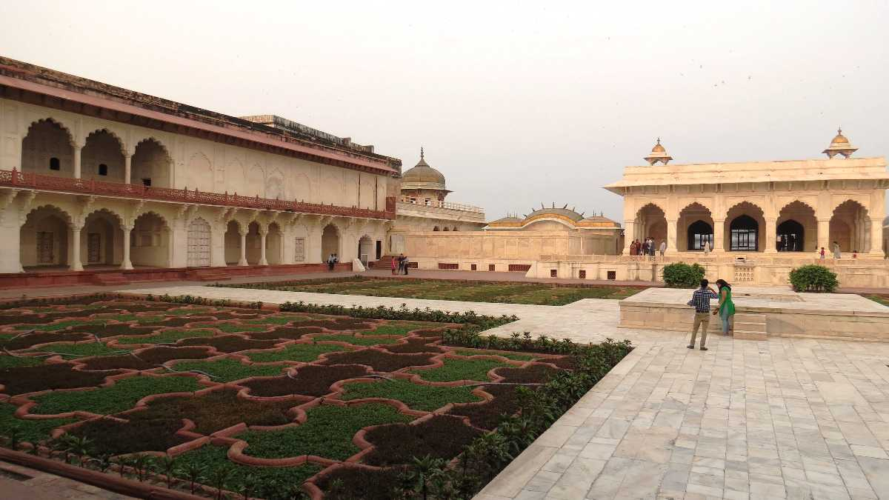
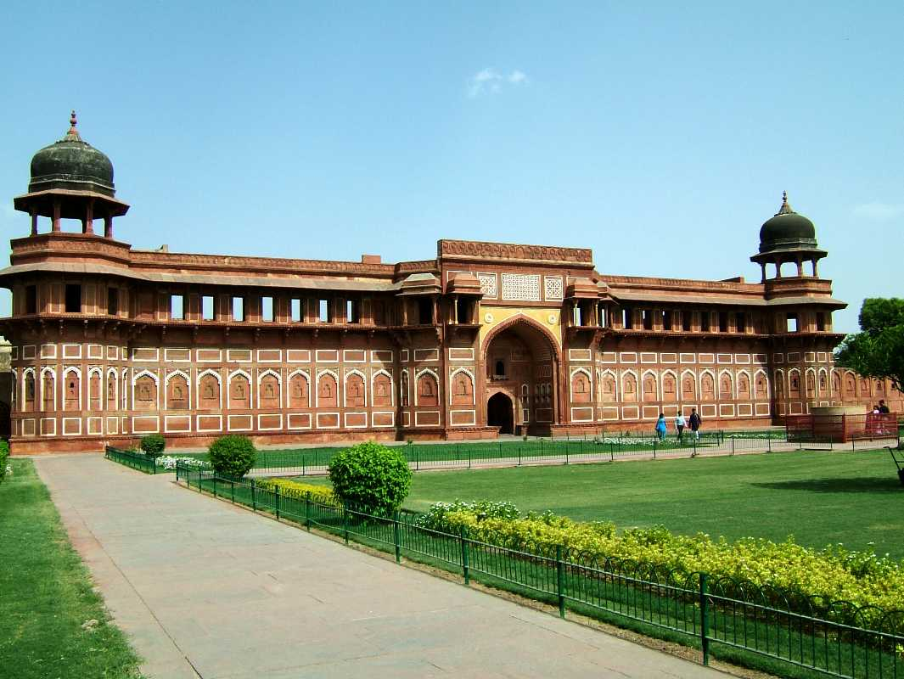
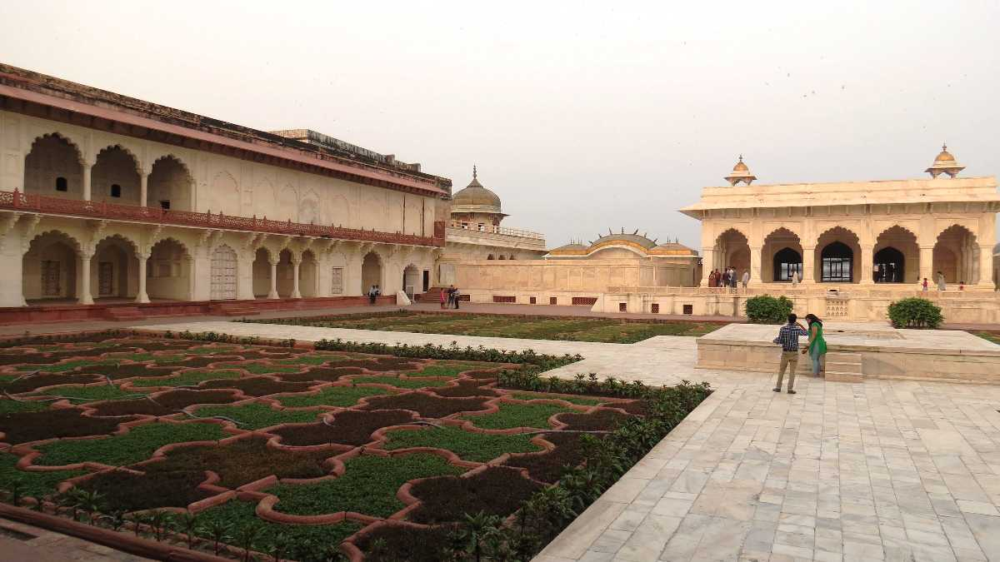
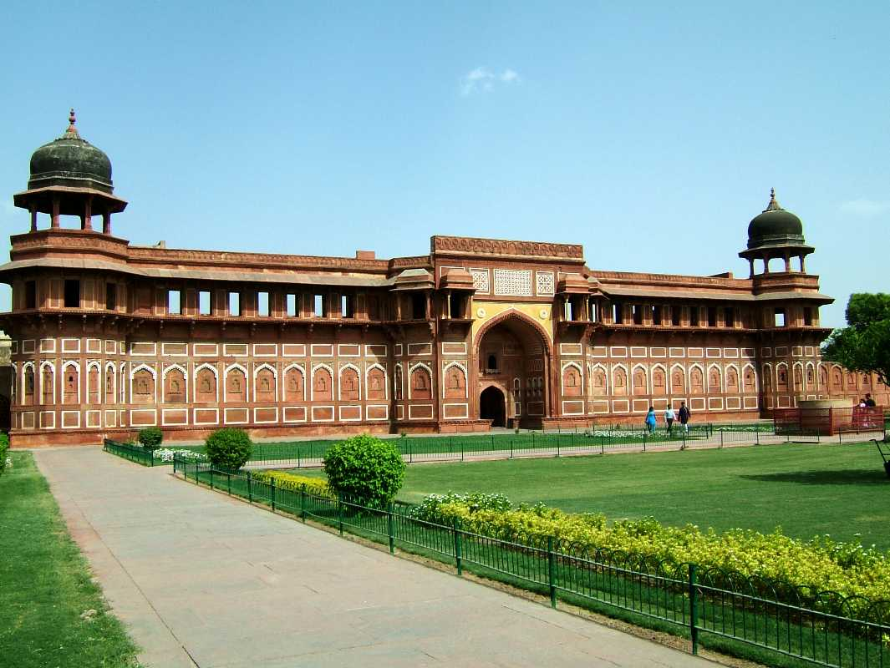

Located on the banks of River Yamuna in Uttar Pradesh, Agra is a popular tourist destination as it is home to one of the 7 wonders of the world, the Taj Mahal. It is a sneak peek into the architectural history and legacy of the Mughal empire with two other UNESCO World Heritage Sites Agra Fort and Fatehpur Sikri. History, architecture, romance all together create the magic of Agra, and hence, makes for a must-visit for anyone living in or visiting India. Agra is one of the most populous cities in UP With its long and rich history.
| Taj Mahal |
Akbar's Tomb |
Angoori Bagh  |
Agra Fort  |
| Weather | Next |